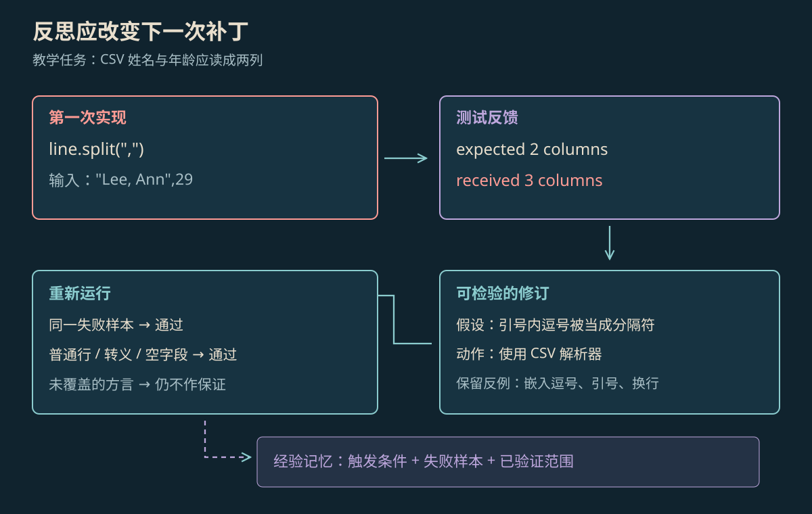

PLANNING & REFLECTION
Agent 规划与反思原理
规划说明先做什么、后做什么；反思回看执行结果，提出下一次改法。真正的改进需要把改法用到行动中，再检查结果。
本页目录
规划和反思各自做什么#
规划（Planning）是把目标拆成可以执行的步骤，并说明先后关系。反思（Reflection）是回看已经发生的动作和结果，找出与目标的差距，再提出改法。规划回答“接下来做什么”，反思回答“刚才哪里没达到要求，下一次怎样改”。
二者可以反复配合：先安排步骤，再调用工具；拿到实际结果后检查是否达标，再修改步骤或做法，重新执行。模型写出一段自我评价还不够，评价必须改变后续动作，并通过检查，才能说明它有用。
任务清单、搜索与经验更新#
任务清单只写要做哪些事；能真正执行的计划还要写清：这一步要等前一步拿到什么、最后交出什么、怎样算完成。例如修复 CSV 解析，需要先取得出错输入，再改代码，最后运行指定样例。CSV 是用分隔符组织表格文本的格式，引号等规则会影响怎样分列。
| 研究方法 | 具体怎么做 | 主要改变什么 |
|---|---|---|
| ReWOO | 先列出工具步骤和前后依赖，再让执行部分取得结果 | 把列计划与执行工具分开 |
| Tree of Thoughts（思维树） | 同时尝试几条中间思路，检查后继续其中一条，必要时退回 | 怎样比较和选择解题路径 |
| Reflexion | 把本次反馈整理成文字经验，供后续尝试使用 | 多次尝试之间记住什么 |
它们处理的是不同问题，不能互换名称：ReWOO 组织计划与工具步骤，Tree of Thoughts 比较多个方向，Reflexion 保存反馈经验。[1][2][3]
实际结果、检查结论与改法#
这三件事要分开：工具返回或测试输出，是实际观察；是否满足要求，是检查结论；为什么出错、准备怎样修，是待验证的改法。测试失败能说明结果不对，却不一定直接说明原因。
一次修订可以这样做：保存出错输入和实际输出；提出具体原因；修改代码或计划；再跑原来的失败样例及相关测试。如果失败原因是文件不存在，应先检查路径或环境，不能一看到“测试失败”就重写算法。
示例：修复 CSV 分列错误#
教学任务要把一行 CSV 读成姓名与年龄。最初使用 line.split(",") 按逗号切分，普通行 Ann,29 得到两列，"Lee, Ann",29 却得到三列。样例表明，引号内的逗号也被错误拆开了。

放大查看 ↗改法是使用能识别 CSV 引号规则的解析器。下面同时检查引号内逗号、普通行、引号转义和空字段：
import csv
from io import StringIO
bad = '"Lee, Ann",29'
assert bad.split(",") == ['"Lee', ' Ann"', '29']
cases = [
('"Lee, Ann",29', ["Lee, Ann", "29"]), # 嵌入逗号
("Ann,29", ["Ann", "29"]), # 普通行
('"Lee ""Ann""",29', ['Lee "Ann"', "29"]), # 转义引号
(",29", ["", "29"]), # 空字段
]
for raw, expected in cases:
assert next(csv.reader(StringIO(raw), dialect="excel")) == expected
print(f"{len(cases)} CSV fixtures passed")这四条检查已经实际运行通过，使用 Python 标准库的 excel 方言——也就是这次选定的一套 CSV 格式规则。它们只验证这里的四种输入。字段内换行、其他分隔符和产品里的完整导入过程，还需要另外测试。
反馈不可靠时会发生什么#
同一个模型也可能赞同自己的错误，或为了“改进”而改坏正确代码。外部测试、可核对的资料和真实环境结果，可以提供另一份依据，但它们也只能证明已经检查过的部分。
多试几次，本身就会增加碰到正确候选的机会。因此比较“有反思”和“无反思”时，要给两边相同的总调用额度，或一起报告增加的时间与成本，不能把所有改善都归功于反思文字。
怎样保存以后用得上的经验#
Reflexion 把文字经验提供给后续调用，不是重新训练模型。经验应写清什么时候适用、出错输入是什么、改了什么，以及测试覆盖了哪些情况。把一次修复写成“所有解析问题都用 csv.reader”，会漏掉格式规则和适用范围。[3]
CSV 示例可以把四组输入和期望结果保存下来。以后改代码时再跑一遍，这叫回归测试，用来检查旧问题有没有重新出现。若新需求增加其他格式，再补充对应样例。
参考资料
论文、官方文档与案例依据。
- [1]
- [2]Tree of Thoughts: Deliberate Problem Solving with Large Language Models ↗
Yao 等；NeurIPS 2023，多路径探索与评价。
- [3]Reflexion: Language Agents with Verbal Reinforcement Learning ↗
Shinn 等；通过语言反馈与事件记忆影响后续试验。